Recipe 5 who + 5 map + 5 what + 1 thread ·
floor 28d · target 42d ·
min Lifeline 250km · 6 editions ·
33 warnings. Legend: scrap grid — red
opens torn, black is the money shot.
№ 23 — Wednesday 2026-07-22
6 warnings
tier-backfill · shakespeare — medium item in a easy slot — easy pool blocked by the 28-day floor
tier-backfill · sitting-bull — medium item in a easy slot — easy pool blocked by the 28-day floor
tier-backfill · sojourner-truth — medium item in a easy slot — easy pool blocked by the 28-day floor
tier-backfill · wat-arun — medium item in a easy slot — easy pool blocked by the 28-day floor
tier-backfill · baths-caracalla — medium item in a easy slot — easy pool blocked by the 28-day floor
tier-backfill · belem-tower — medium item in a easy slot — easy pool blocked by the 28-day floor
Face Value
William Shakespeare(medium)TIER BACKFILL
Playwright and poet (1564–1616) · no birth record survives — his April 23 birthday is a guess matched to his death date Public domain · Attributed to John Taylor · never aired
Sitting Bull(medium)TIER BACKFILL
Hunkpapa Lakota leader (c. 1831–1890) · toured with Buffalo Bill's Wild West show and struck up a bond with Annie Oakley Public domain · David F. Barry · never aired
Sojourner Truth(medium)TIER BACKFILL
American abolitionist and women's rights activist (c. 1797–1883) · sold copies of her own photograph, captioned 'I Sell the Shadow to Support the Substance' Public domain · Randall Studio · never aired
Sally Ride(medium)
Physicist and first American woman in space (1951–2012) · her sexuality stayed private until her obituary, written by her partner of 27 years Public domain · NASA · never aired
Mongkut(hard)
King of Siam and reformer, father of Chulalongkorn (1804–1868) · spent 27 years as a monk studying Latin and astronomy before taking the throne Public domain · Attributed to Luang Wisut Yothamat · never aired
Relic
Wat Arun(medium)TIER BACKFILL
Bangkok's Temple of Dawn and its porcelain-clad spire on the Chao Phraya · its glittering surface is broken Chinese porcelain, repurposed from ships' ballast unloaded in Bangkok's port CC BY-SA 2.0 · calflier001 · never aired
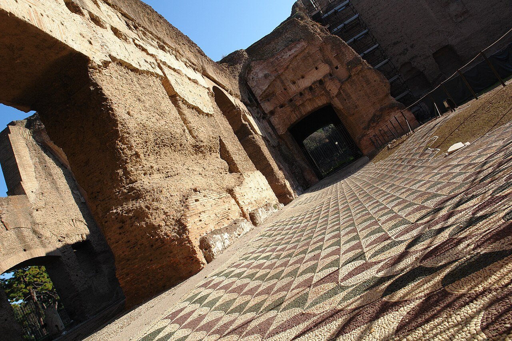
Baths of Caracalla(medium)TIER BACKFILL
Monumental public bathing complex, completed AD 216 · its ruins inspired the grand vaulted halls of New York's original Penn Station and Chicago's Union Station CC BY-SA 3.0 · Pascal Reusch · never aired
Belém Tower(medium)TIER BACKFILL
Manueline fortress-tower guarding Lisbon's harbour, early 16th century · one carved gargoyle is a rhinoceros, based on a famous woodcut whose artist never actually saw one CC BY-SA 3.0 · Alvesgaspar · never aired
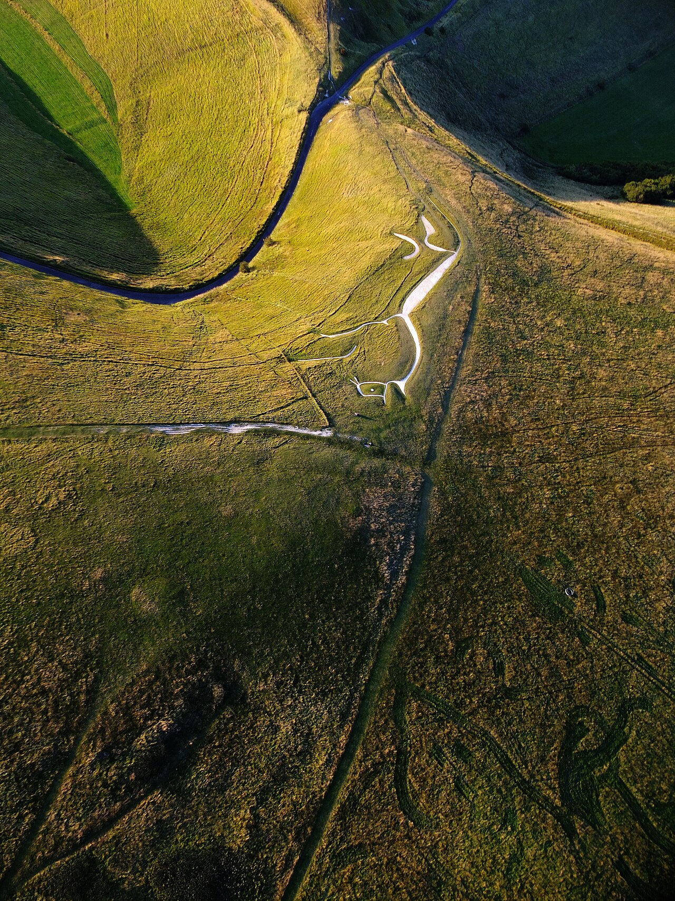
Uffington White Horse(medium)
Britain's stylised chalk hill-figure above Oxfordshire, cut c. 1000 BC — legend places St George's dragon-slaying on the bare hill just below it. CC BY-SA 2.0 · Dave Price · never aired
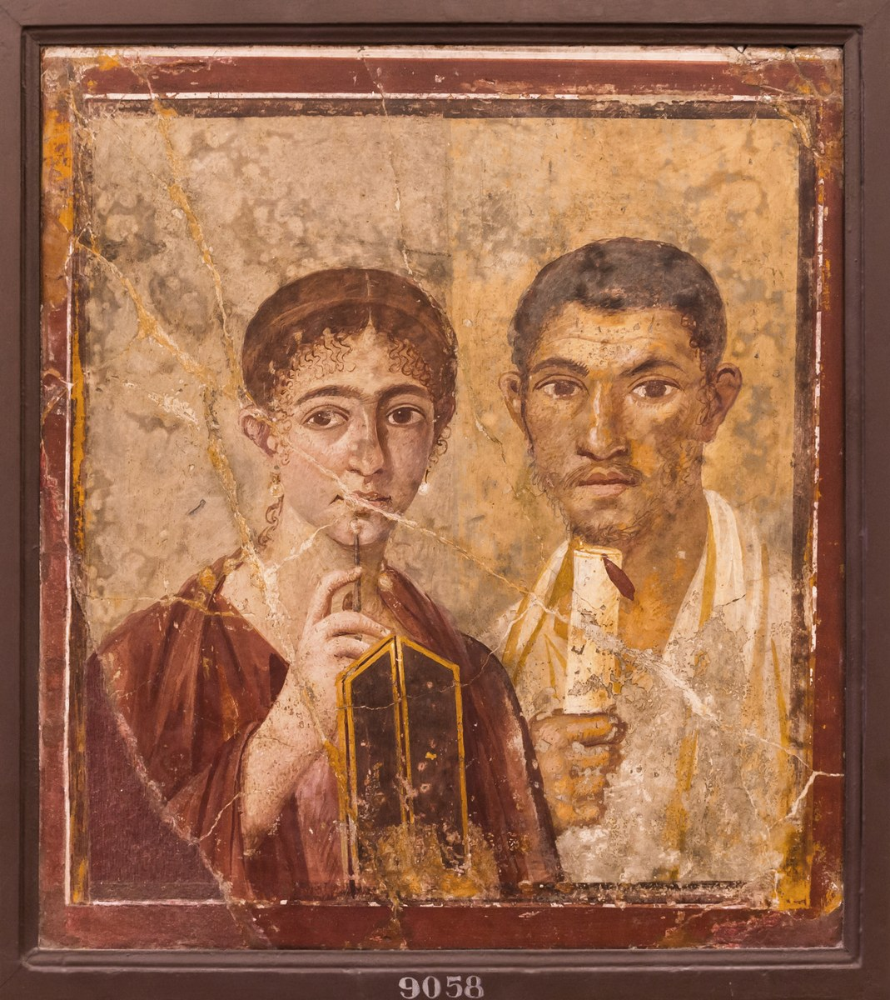
Terentius Neo and His Wife(hard)
Fresco portrait of a Pompeii baker and his wife, 1st century AD, buried by Vesuvius in 79 · both husband and wife hold writing tools, signalling a rare Roman portrait of shared literacy CC0 · Jebulon · never aired
Lifeline
figure
tier
birth → death
km
history
Paul the Apostle Christian apostle and missionary
easy
Tarsus, Turkey 5 → Rome, Italy 66
1,997
never aired
Pyotr Ilyich Tchaikovsky Composer, wrote Swan Lake and the 1812 Overture
easy
Votkinsk, Russia 1840 → Saint Petersburg, Russia 1893
1,405
never aired
Avicenna Physician and philosopher
easy
Afshona, Uzbekistan 980 → Hamadan, Iran 1037
1,513
never aired
Elizabeth Taylor Actor and author
medium
London, United Kingdom 1932 → Los Angeles, United States 2011
8,748
never aired
Lajos Kossuth Hungarian revolutionary statesman
hard
Monok, Hungary 1802 → Turin, Italy 1894
1,084
never aired
Thread — “Plague, Fire and Flood” (medium, never aired)
Historic pandemics: Black Death · Spanish Flu · Plague of Justinian · Antonine Plague
Great fires: Great Fire of London · Burning of Rome · Chicago Fire · Library of Alexandria
Famous volcanic eruptions: Vesuvius · Krakatoa · Tambora · Thera
Disasters blamed (wrongly) on someone: Nero and the fire · Mrs O'Leary's cow · Marie Antoinette's cake · Typhoid Mary
№ 24 — Thursday 2026-07-23
6 warnings
tier-backfill · thomas-jefferson — medium item in a easy slot — easy pool blocked by the 28-day floor
tier-backfill · tokugawa-ieyasu — medium item in a easy slot — easy pool blocked by the 28-day floor
tier-backfill · diamond-sutra — medium item in a easy slot — easy pool blocked by the 28-day floor
tier-backfill · gyeongbokgung — medium item in a easy slot — easy pool blocked by the 28-day floor
tier-backfill · hereford-mappa-mundi — medium item in a hard slot — hard pool blocked by the 28-day floor
era-cluster — 4 Lifeline figures share era “19th c. AD”
Face Value
Thomas Jefferson(medium)TIER BACKFILL
3rd US President (1743–1826) · died July 4, 1826 — the Declaration's 50th anniversary — hours before John Adams Public domain · Rembrandt Peale · never aired
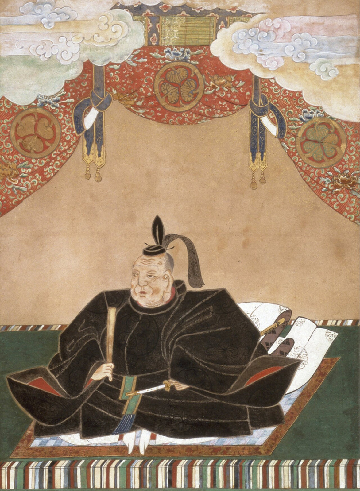
Tokugawa Ieyasu(medium)TIER BACKFILL
Japanese shogun, founder of the Tokugawa shogunate (1543–1616) · the peace he founded held for over 250 years, among history's longest such stretches Public domain · Traditionally attributed to Kano Tan'yu · never aired
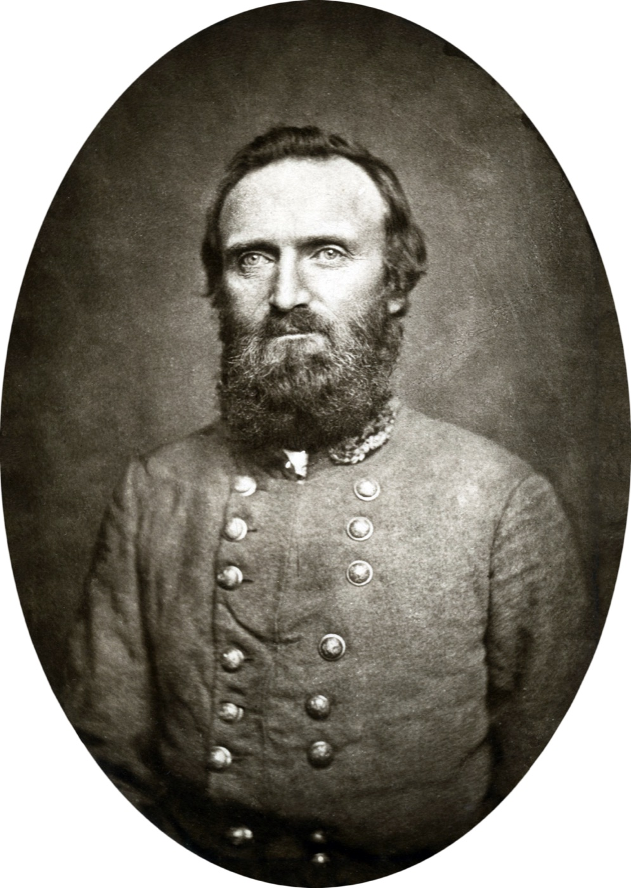
Stonewall Jackson(medium)
Confederate general (1824–1863) · shot by his own men in the dark, he died of pneumonia after his arm was amputated Public domain · Unknown photographer · never aired
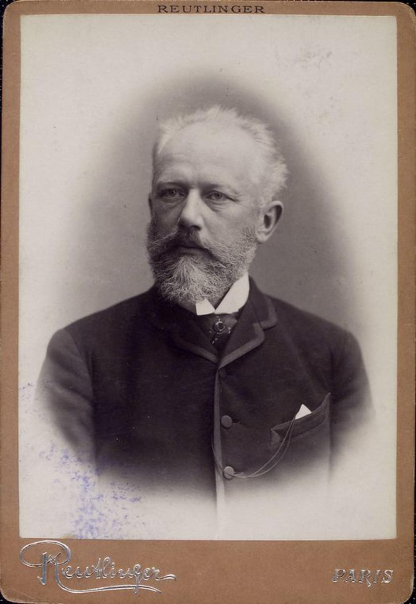
Pyotr Tchaikovsky(medium)
Russian composer of Swan Lake (1840–1893) · died nine days after his Sixth Symphony's premiere — cholera or suicide, still debated Public domain · Émile Reutlinger · never aired
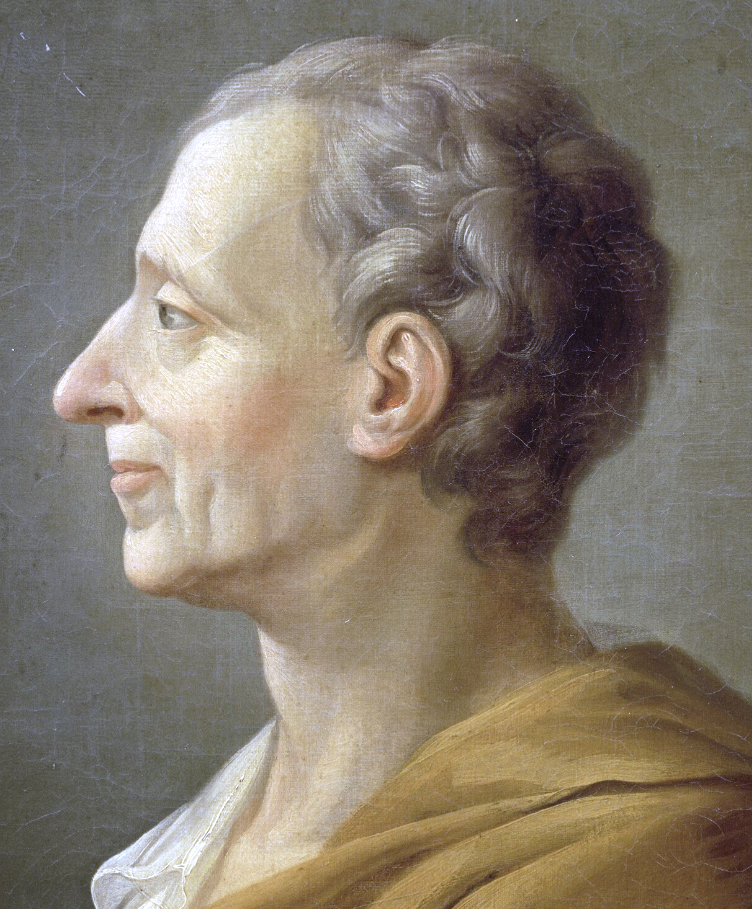
Montesquieu(hard)
Thinker who championed the separation of powers (1689–1755) · period portrait Public domain · After Jacques-Antoine Dassier · never aired
Relic
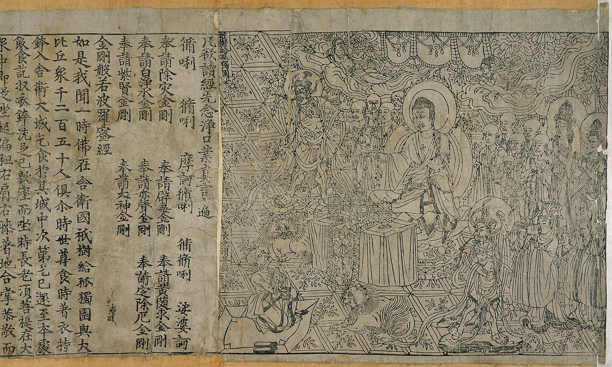
Diamond Sutra(medium)TIER BACKFILL
Woodblock-printed Buddhist scroll dated 868 AD — the world's earliest complete dated printed book, nearly 600 years before Gutenberg · British Library, London CC0 · British Library · never aired
Gyeongbokgung(medium)TIER BACKFILL
Seoul's grand royal palace of the Joseon dynasty, first built in 1395 · left in ruins two centuries after invasion, rebuilt in 1867 — Japan then built its HQ right in front CC BY-SA 4.0 · Basile Morin · never aired
Chartres Cathedral(medium)
Rebuilt after the 1194 fire with its stained glass intact, mainly 12th–13th century · its cobalt 'Chartres blue' stained glass uses a medieval recipe never fully reproduced since CC BY 2.0 · Elliott Brown · never aired
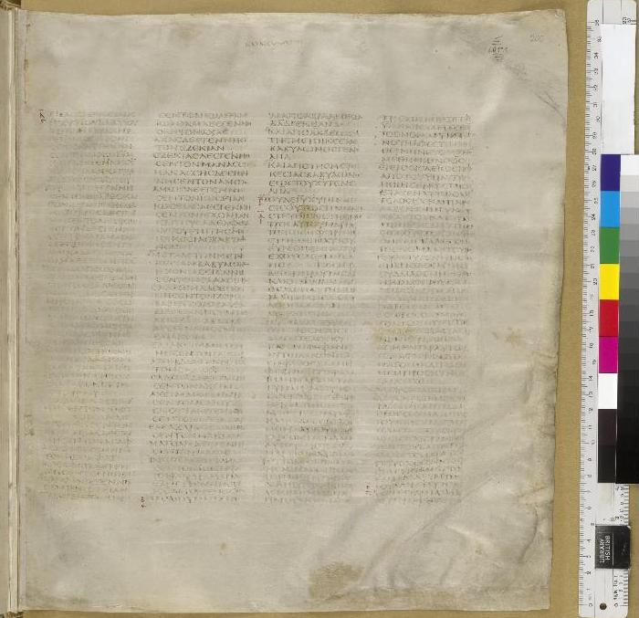
Codex Sinaiticus(medium)
One of the oldest Bibles in Greek, with a complete New Testament, 4th century AD · its pages are split across four institutions — the Sinai monastery where found disputes how they got there Public domain · Unknown scribe · never aired
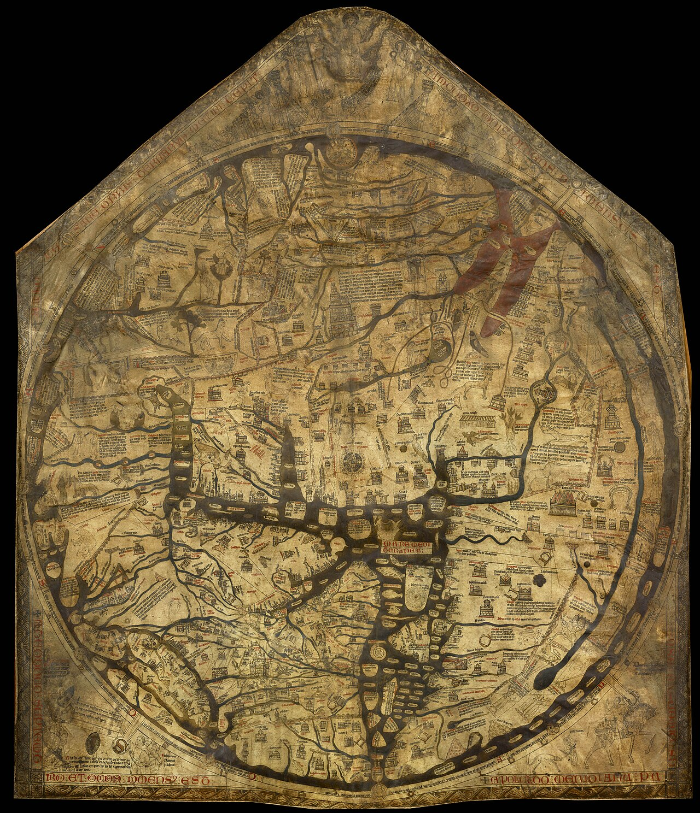
Hereford Mappa Mundi(medium)TIER BACKFILL
Largest surviving medieval world map on a single sheet, c. 1300 · it places Jerusalem dead-centre, east at the top — real kingdoms mixed with Eden and mythical monsters Public domain · Richard of Haldingham (attrib.) · never aired
Lifeline
figure
tier
birth → death
km
history
Alfred Nobel Inventor of dynamite, founder of the Nobel Prizes
easy
Stockholm, Sweden 1833 → Sanremo, Italy 1896
1,860
never aired
Jorge Luis Borges Poet and author
easy
Buenos Aires, Argentina 1899 → Geneva, Switzerland 1986
11,063
never aired
Arthur Rimbaud Poet and author
medium
Charleville, France 1854 → Marseille, France 1891
721
never aired
John Keats Poet and author
medium
London, United Kingdom 1795 → Rome, Italy 1821
1,434
never aired
Joseph Conrad Novelist
hard
Berdychiv, Ukraine 1857 → Bishopsbourne, England 1924
1,934
never aired
Thread — “Cities of Gold” (medium, never aired)
Great pre-Columbian American cities: Tenochtitlan · Cusco · Tikal · Cahokia
Deciphered a lost ancient script: Champollion · Rawlinson · Ventris · Grotefend
Islamic Golden Age polymaths: Al-Khwarizmi · Ibn Sina · Ibn al-Haytham · Al-Biruni
Credited with inventing a script single-handedly: Sequoyah · Sejong · Wulfila · Mesrop Mashtots
№ 25 — Friday 2026-07-24
3 warnings
tier-backfill · bismarck — medium item in a easy slot — easy pool blocked by the 28-day floor
tier-backfill · matsumoto-castle — medium item in a easy slot — easy pool blocked by the 28-day floor
tier-backfill · mesa-verde — medium item in a hard slot — hard pool blocked by the 28-day floor
Face Value
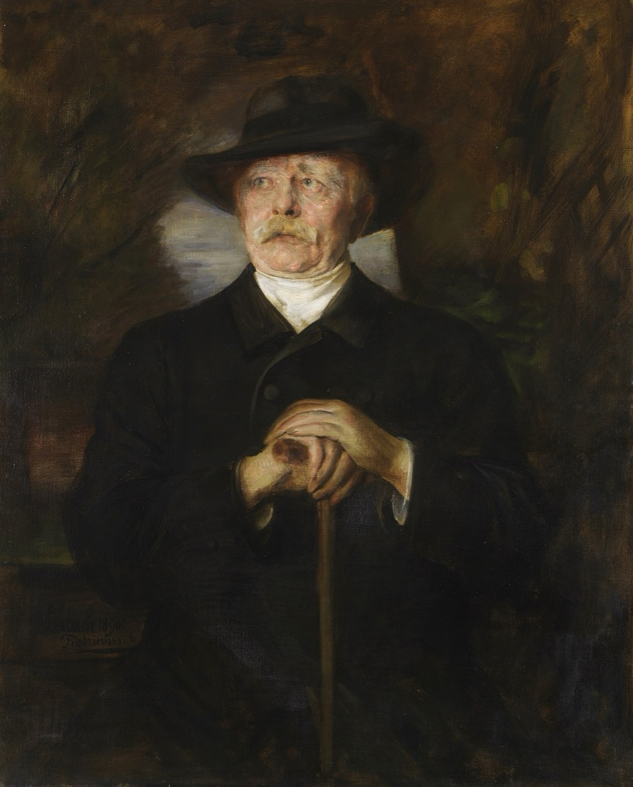
Otto von Bismarck(medium)TIER BACKFILL
Prussian statesman (1815–1898) · unified Germany with three short wars, then spent 20 years keeping the peace Public domain · Franz von Lenbach · never aired
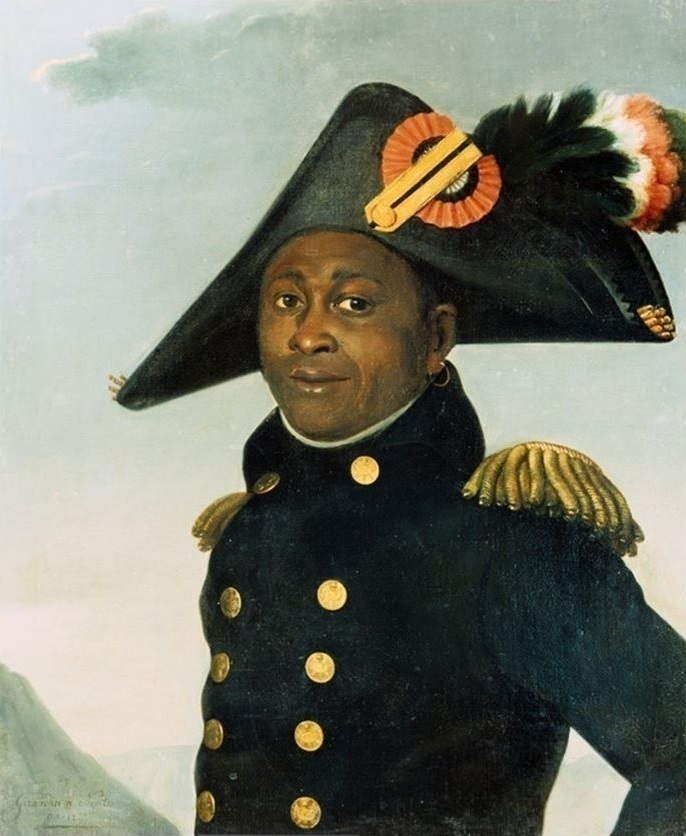
Toussaint Louverture(medium)
Haitian revolutionary leader (c. 1743–1803) · led the only slave revolt to found a free state, dying in prison before it was declared Public domain · Alexandre-François-Louis, comte de Girardin · never aired
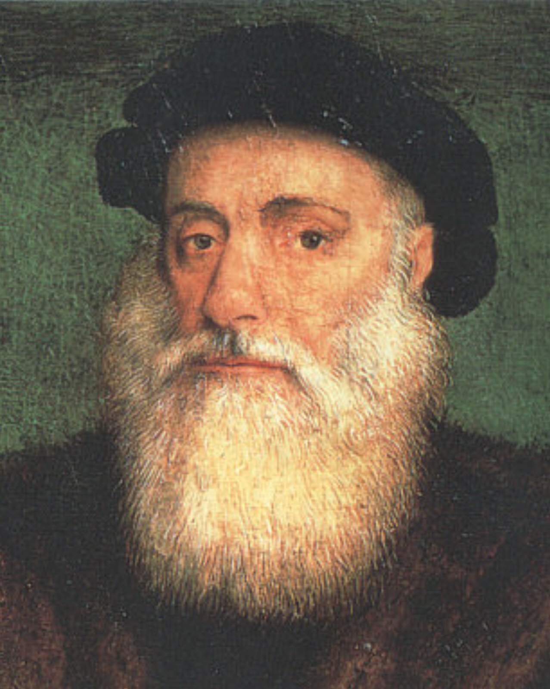
Vasco da Gama(medium)
Portuguese explorer who opened the first sea route from Europe to India (c. 1460s–1524) · his round trip to India took two years and killed over half his crew, mostly to scurvy Public domain · Gregório Lopes · never aired
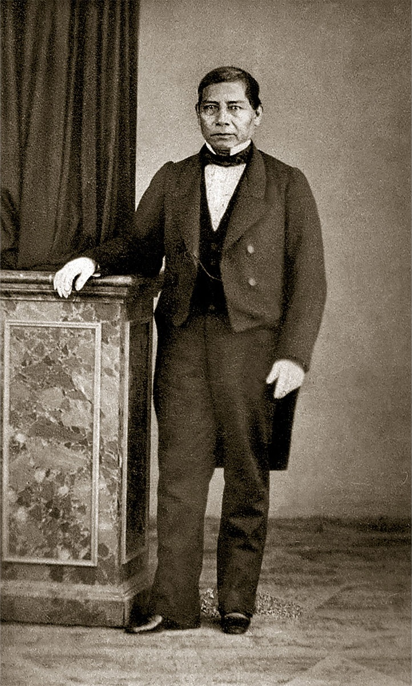
Benito Juárez(medium)
President of Mexico who resisted the French intervention (1806–1872) · a Zapotec shepherd boy with no Spanish at 12, later Mexico's first Indigenous president Public domain · Unknown · never aired
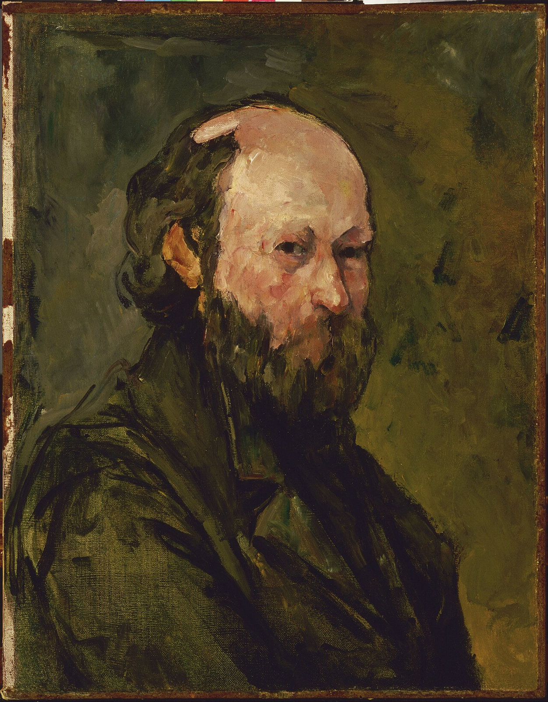
Paul Cézanne(hard)
Post-Impressionist father of modern art (1839–1906) · mocked in his lifetime; Picasso later called him 'the father of us all' Public domain · Paul Cézanne · never aired
Relic
Matsumoto Castle(medium)TIER BACKFILL
Japan's black-walled 'Crow Castle', a 16th-century keep in the Alps · unlike most reconstructed Japanese castles, its wooden keep is largely original, its walls black CC BY 2.0 · tsuruta yosuke · never aired
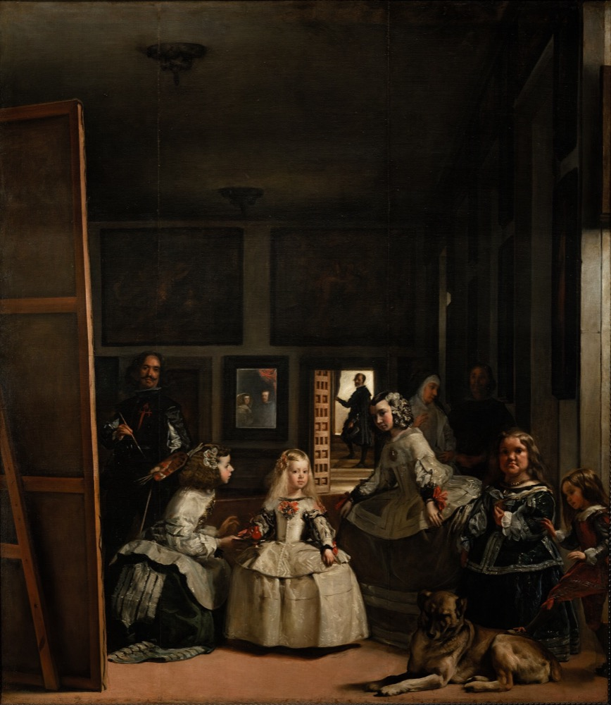
Las Meninas(medium)
Diego Velázquez, 1656 · Museo del Prado, Madrid — Velázquez painted himself into the scene, brush in hand, working on the very canvas we're looking at. Public domain · Diego Velázquez · never aired
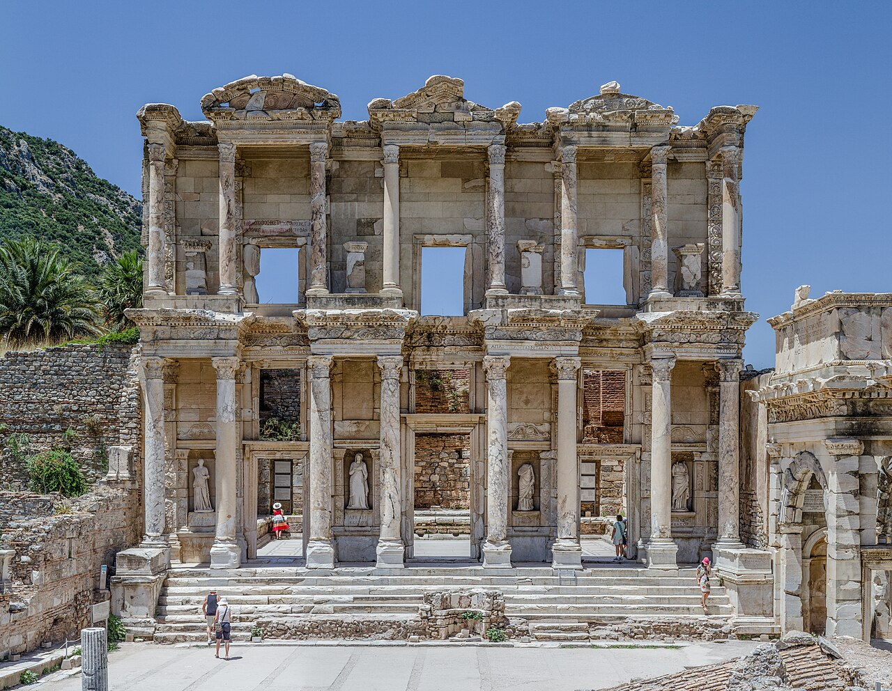
Library of Celsus(medium)
Roman marble library facade at Ephesus, c. 117 AD — Celsus himself is buried in a stone sarcophagus beneath it, making his library also his tomb. CC BY-SA 3.0 · Benh LIEU SONG · never aired
Shore Temple(medium)
Granite temple standing by the Bay of Bengal at Mahabalipuram, 8th century AD · legend told of six sister temples swallowed by the sea — the 2004 tsunami briefly bared structures offshore CC BY 4.0 · Vyacheslav Argenberg · never aired
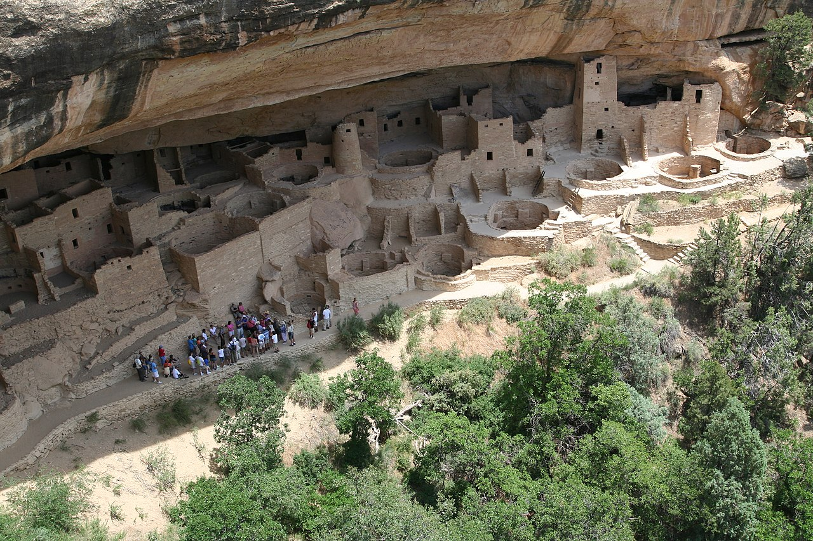
Mesa Verde(medium)TIER BACKFILL
Ancestral Puebloan cliff dwellings beneath a Colorado canyon rim, 13th century — Cliff Palace is the largest cliff dwelling in North America, abandoned within a generation for reasons still debated. CC BY-SA 3.0 · Massimo Catarinella · never aired
Lifeline
figure
tier
birth → death
km
history
Jawaharlal Nehru First Prime Minister of India
easy
Prayagraj, India 1889 → New Delhi, India 1964
578
never aired
Adolf Eichmann Holocaust perpetrator
medium
Solingen, Germany 1906 → Ramla, Israel 1962
3,115
never aired
Louis IX of France King of France who died on crusade
medium
Poissy, France 1214 → Tunis, Tunisia 1270
1,499
never aired
Godfrey of Bouillon Crusader leader and first ruler of Jerusalem
medium
Boulogne-sur-Mer, France 1060 → Jerusalem 1100
3,463
never aired
Percy Fawcett Explorer
hard
Torquay, England 1867 → Mato Grosso, Brazil 1925
8,442
never aired
Thread — “Set in Stone” (hard, never aired)
Lost Wonders of the Ancient World: Colossus of Rhodes · Lighthouse of Alexandria · Hanging Gardens · Temple of Artemis
Carved from solid rock: Petra · Lalibela · Ellora · Mount Rushmore
Landmarks moved to another continent: London Bridge · Cleopatra's Needle · Pergamon Altar · Temple of Dendur
Grand creations that famously flopped: Tsar Bell · Spruce Goose · Maginot Line · Vasa
№ 26 — Saturday 2026-07-25
4 warnings
tier-backfill · christopher-columbus — medium item in a easy slot — easy pool blocked by the 28-day floor
tier-backfill · prambanan — medium item in a easy slot — easy pool blocked by the 28-day floor
tier-backfill · sanchi-stupa — medium item in a hard slot — hard pool blocked by the 28-day floor
tier-backfill · shwedagon-pagoda — medium item in a hard slot — hard pool blocked by the 28-day floor
Face Value
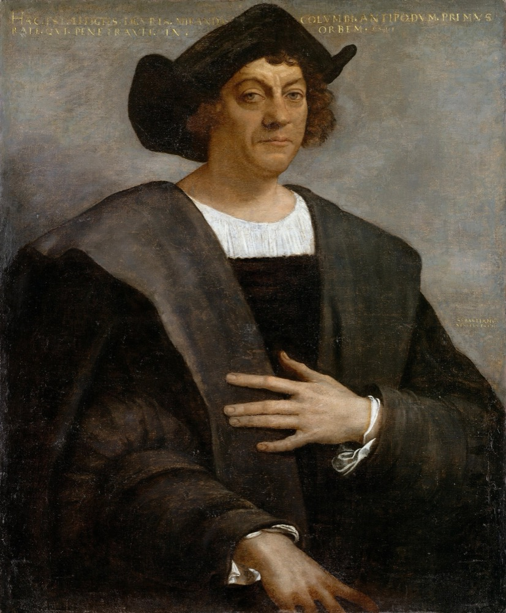
Christopher Columbus(medium)TIER BACKFILL
Explorer (1451–1506) · never set foot in North America, and died insisting he had found Asia Public domain · Unknown painter · never aired
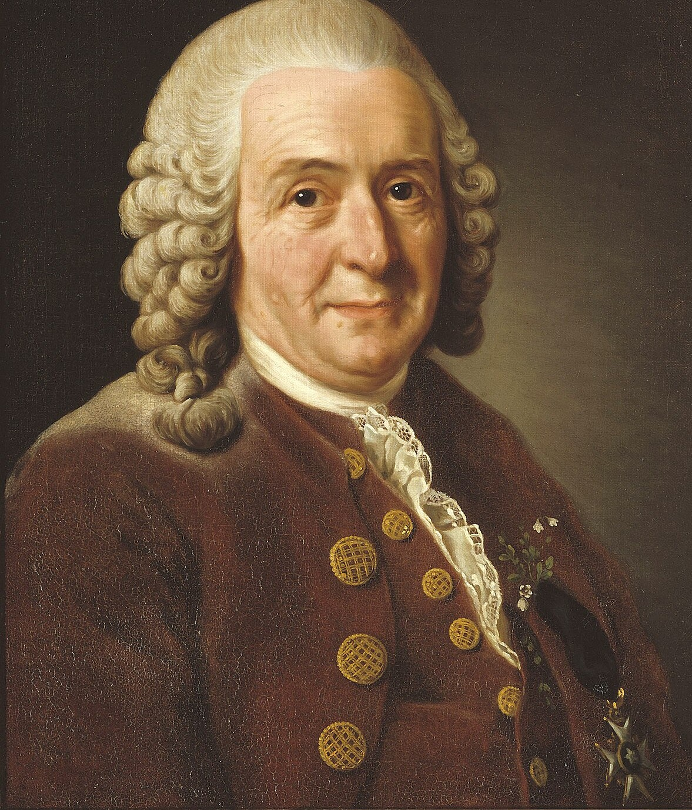
Carl Linnaeus(medium)
Botanist who named the living world (1707–1778) · the great namer took a tiny northern twinflower, Linnaea, as his own emblem Public domain · Alexander Roslin · never aired
Charlemagne(medium)
King of the Franks, crowned Emperor in 800 (c. 747–814) · slept with writing tablets under his pillow, but never mastered the pen Public domain · Albrecht Dürer · never aired
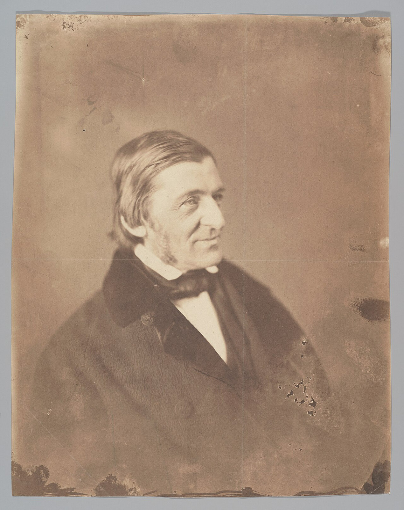
Ralph Waldo Emerson(hard)
American essayist and transcendentalist sage (1803–1882) · quit the pulpit rather than keep serving a communion rite he'd stopped believing in CC0 · Mathew Brady · never aired
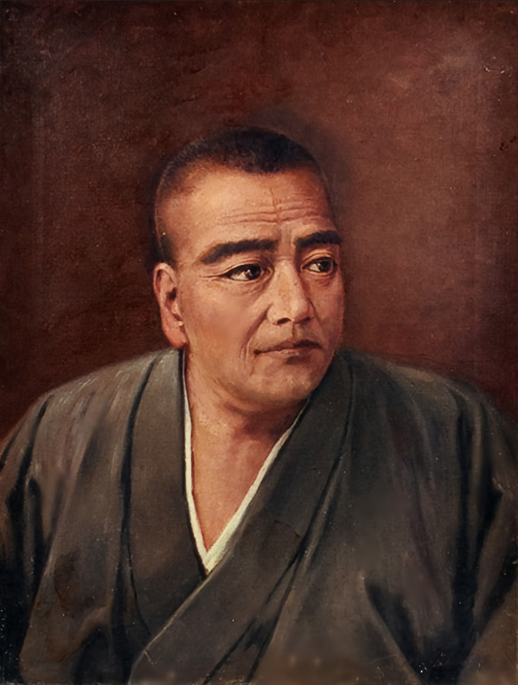
Saigo Takamori(hard)
Samurai leader of the Meiji Restoration and the Satsuma Rebellion (1828–1877) · died rebelling against the state he built; the emperor pardoned him anyway Public domain · Ishikawa Shizumasa · never aired
Relic
Prambanan(medium)TIER BACKFILL
Java's soaring Hindu temple compound of pointed spires, 9th century AD — local legend says it was built in a single night, one temple short of a cursed princess's demand for a thousand. CC BY-SA 4.0 · Gunawan Kartapranata · never aired
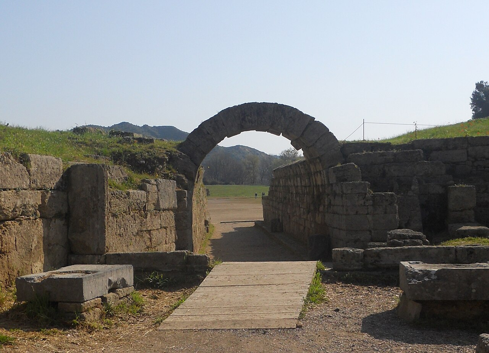
Olympia Stadium(medium)
Stadium of the ancient Games (first held 776 BC); the vaulted entrance is 3rd century BC · athletes at the ancient Games competed naked — married women were banned from watching, on pain of death CC BY 2.0 · Erik Drost · never aired
Palenque(medium)
Maya pyramid-tomb rising from the Chiapas jungle — its ruler Pakal's carved sarcophagus lid is the image conspiracy theorists insist shows an ancient astronaut, 7th century AD. CC BY-SA 3.0 · Strobilomyces · never aired
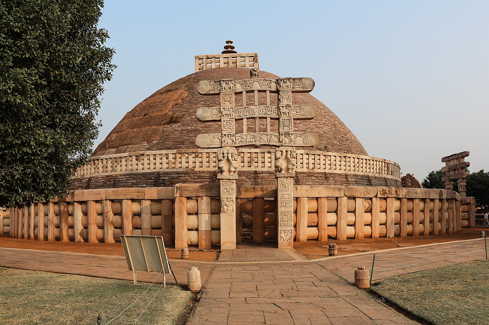
Sanchi Stupa(medium)TIER BACKFILL
India's great Buddhist stupa and its carved gateways, begun under Ashoka · its carved gateways never show the Buddha in human form — early art used symbols instead, like a wheel CC BY-SA 3.0 · Bernard Gagnon · never aired
Shwedagon Pagoda(medium)TIER BACKFILL
Myanmar's great stupa crowning Yangon, plated in tonnes of gold and said to enshrine strands of the Buddha's own hair · its spire is crowned by a golden orb studded with diamonds, including a 76-carat stone at the very tip CC BY 4.0 · Vyacheslav Argenberg · never aired
Lifeline
figure
tier
birth → death
km
history
Richard Nixon 37th U.S. President, resigned over Watergate
easy
Yorba Linda, United States 1913 → Manhattan, United States 1994
3,908
never aired
Cnut the Great King of England, Denmark and Norway
medium
Denmark 995 → Shaftesbury, England 1035
951
never aired
Edward I of England King of England known as Longshanks
medium
Westminster, London, England 1239 → Burgh by Sands, England 1307
Thread — “Talking About the Weather” (hard, never aired)
Battles fought in filthy weather: Agincourt · Towton · Passchendaele · The Bulge
Weather credited with rescuing a nation: The Kamikaze · The Protestant Wind · General Winter · The fog of Long Island
Years with nicknames: Year Without a Summer · Annus Mirabilis · Annus Horribilis · Year of the Four Emperors
Long spells of rough climate: The Little Ice Age · The Medieval Warm Period · The Dust Bowl · The Great Frost of 1709
№ 27 — Sunday 2026-07-26
3 warnings
tier-backfill · teotihuacan-pyramid-sun — medium item in a hard slot — hard pool blocked by the 28-day floor
tier-backfill · trundholm-sun-chariot — medium item in a hard slot — hard pool blocked by the 28-day floor
tier-backfill · warren-cup — medium item in a hard slot — hard pool blocked by the 28-day floor
Face Value
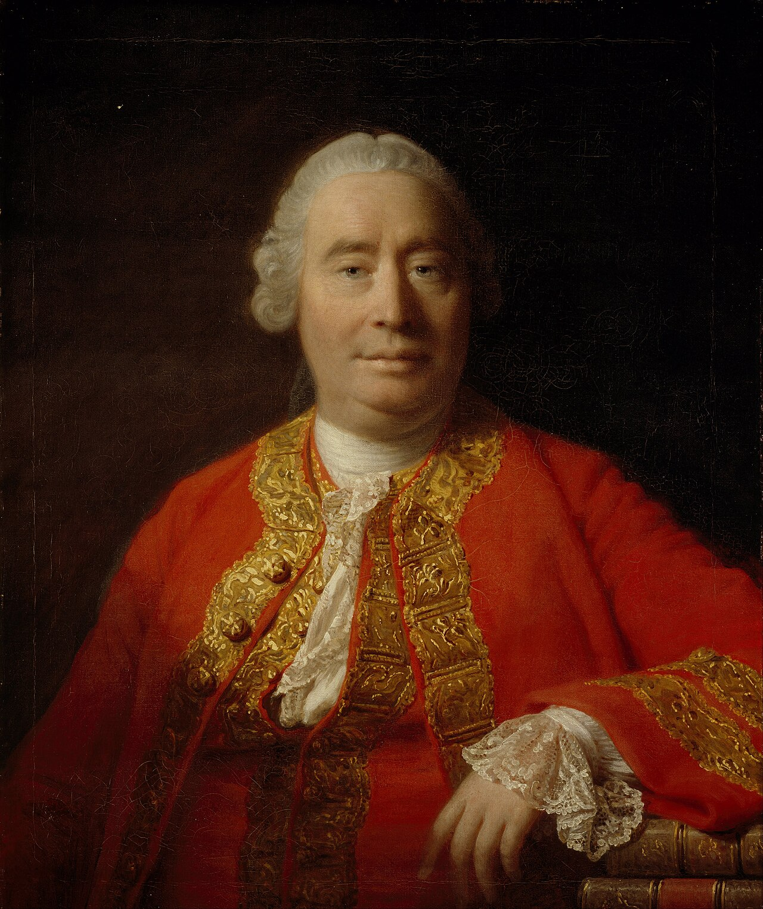
David Hume(medium)
Skeptical Scottish Enlightenment philosopher (1711–1776) · on his deathbed, cheerfully told Boswell that annihilation held no terrors Public domain · Allan Ramsay · never aired
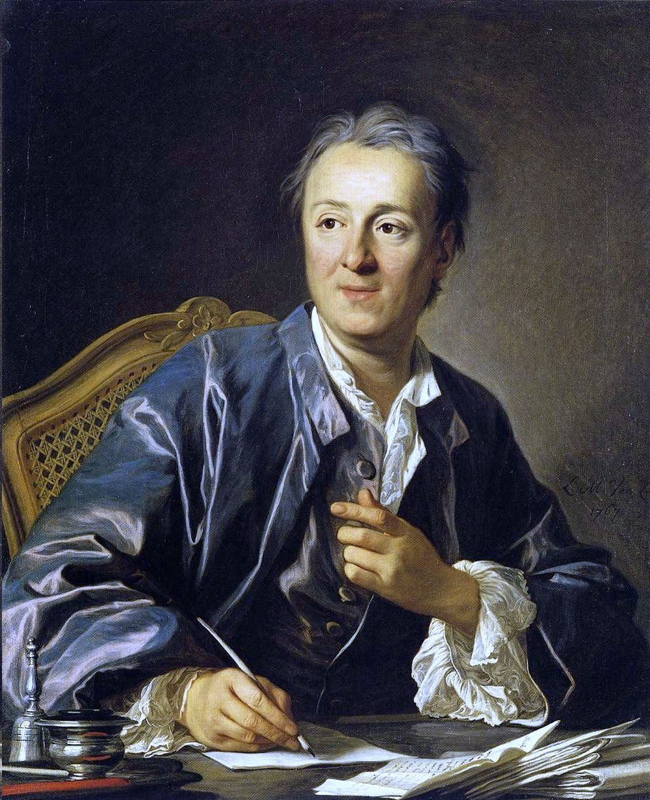
Denis Diderot(medium)
Editor of the great Encyclopédie (1713–1784) · when the king banned it, he simply kept writing the rest in secret Public domain · Louis-Michel van Loo · never aired
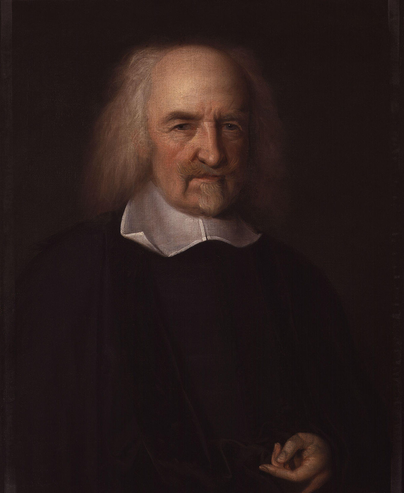
Thomas Hobbes(hard)
Philosopher of the all-powerful Leviathan (1588–1679) · born early when the Armada scared his mother — 'fear and I were born twins' Public domain · John Michael Wright · never aired
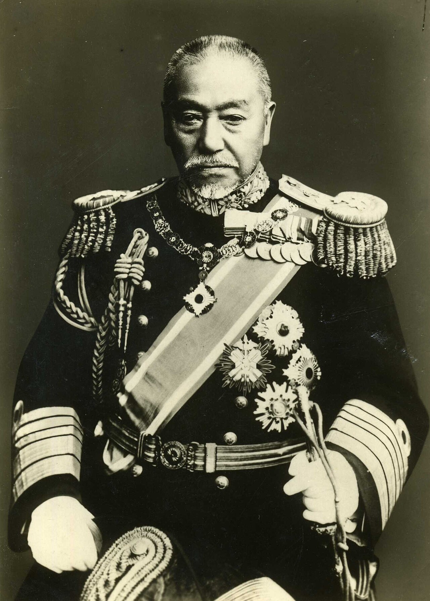
Togo Heihachiro(hard)
Admiral who defeated the Russian fleet at Tsushima in 1905 (1848–1934) · learned seamanship on the Thames as a cadet, then sank the Baltic Fleet Public domain · Unknown photographer · never aired
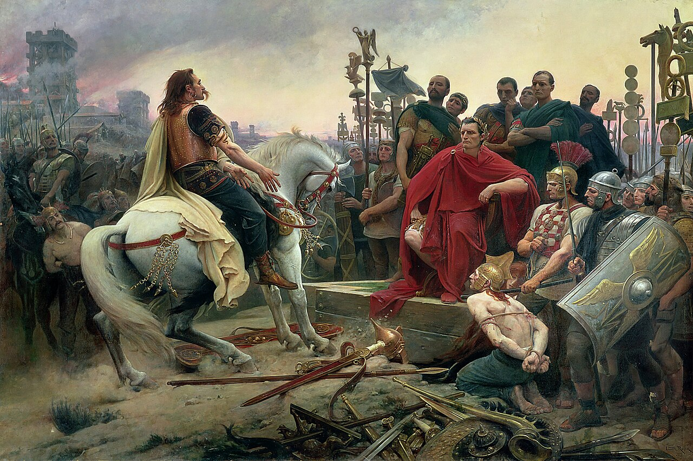
Vercingetorix(hard)
Gallic chieftain who united the tribes against Rome, then surrendered by throwing down his arms at Caesar's feet before being executed after Caesar's triumph (c. 82–46 BC) · later imagined depiction, painting "Vercingetorix Throws Down His Arms at the Feet of Julius Caesar" by Lionel Royer, 1899 Public domain · Lionel Royer (1852–1926) · never aired
Relic
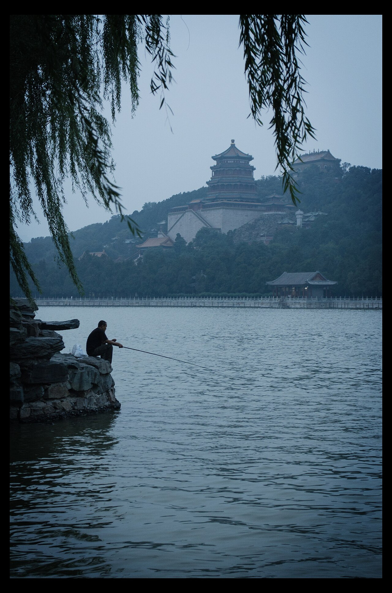
Summer Palace(medium)
Beijing's imperial lakeside garden-palace, rebuilt in the 1880s by the Dowager Empress Cixi — reportedly using funds meant for China's navy. CC BY-SA 4.0 · Alexturner85 · never aired
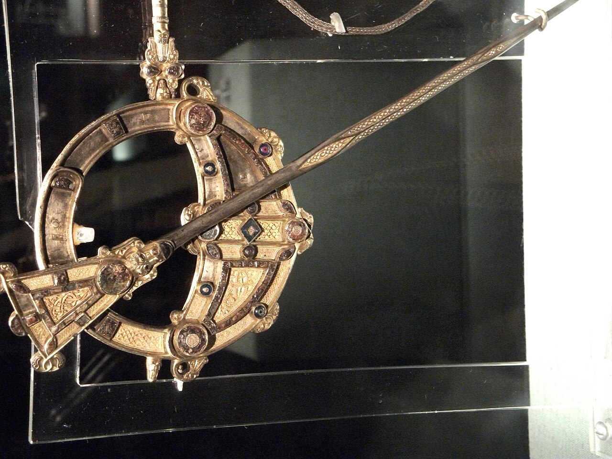
Tara Brooch(medium)
Elaborate Celtic gilt-silver pseudo-penannular brooch, early 8th century AD · despite the name, it has no link to the Hill of Tara — found near a beach, renamed for marketing CC BY-SA 3.0 · Johnbod · never aired
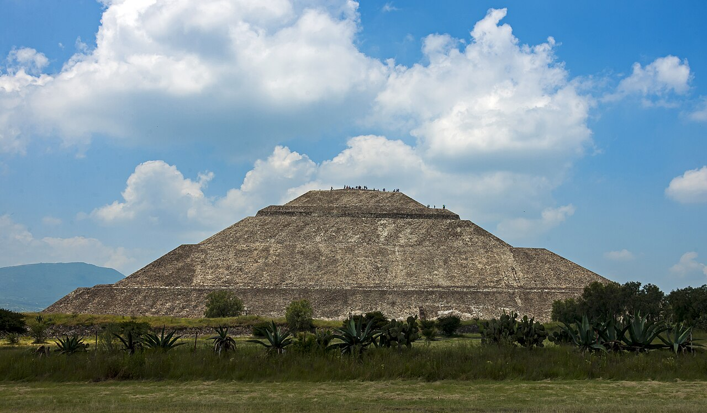
Pyramid of the Sun(medium)TIER BACKFILL
Colossal stepped pyramid at Teotihuacán, Mexico — the third-largest pyramid on Earth, built c. 200 AD by a civilisation whose own name for itself has been lost to time. CC BY-SA 3.0 · Daniel Case · never aired
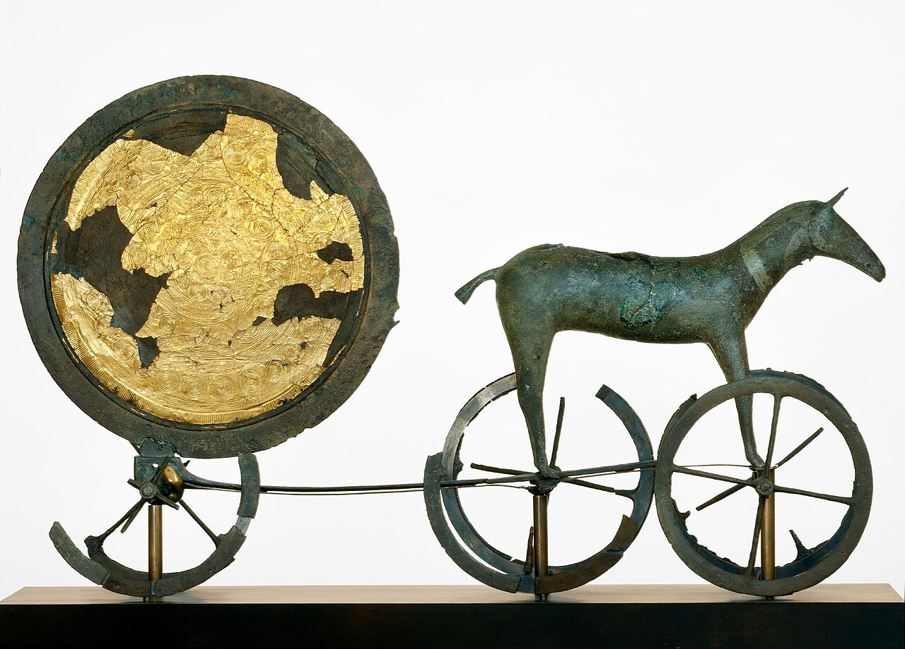
Trundholm Sun Chariot(medium)TIER BACKFILL
Bronze Age horse-drawn gilded sun disc on wheels, c. 1400 BC · one face of the sun disc is gilded gold, the other plain bronze — day and night journeys CC BY-SA 3.0 · Nationalmuseet / John Lee · never aired
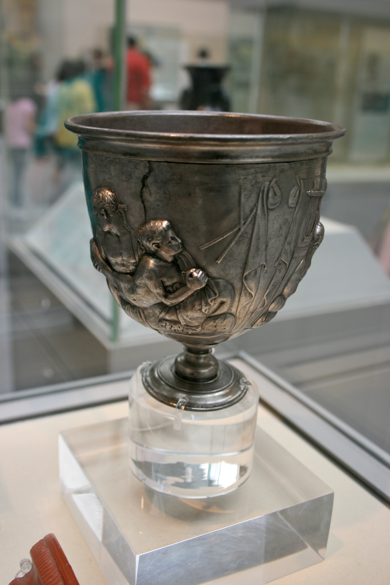
Warren Cup(medium)TIER BACKFILL
Its explicit homoerotic relief scenes made it too controversial for the British Museum to put on public display for decades after acquiring it. CC BY 2.0 · Ashley Van Haeften · never aired
Lifeline
figure
tier
birth → death
km
history
Henry VII of England First Tudor king of England
medium
Pembroke, Wales 1457 → Richmond, London, England 1509
319
never aired
Mehmed II Ottoman sultan who conquered Constantinople
medium
Edirne, Turkey 1432 → Gebze, Turkey 1481
259
never aired
Ludwig Wittgenstein Philosopher
hard
Vienna, Austria 1889 → Cambridge, England 1951
1,236
never aired
Olaudah Equiano Writer and abolitionist
hard
Essaka, Nigeria 1745 → London, England 1797
5,061
never aired
Louis Riel Métis political leader
hard
Winnipeg, Canada 1844 → Regina, Canada 1885
536
never aired
Thread — “The Witch Hunts” (hard, never aired)
Where witches were hunted: Salem · Pendle · North Berwick · Würzburg
The witch-hunter's world: Witchfinder · Familiar · Coven · Broomstick
Tests and punishments: Ducking stool · Witch's mark · Swimming test · Pricking
The books and the hunters: Malleus Maleficarum · Matthew Hopkins · Daemonologie · Inquisition
№ 28 — Monday 2026-07-27
11 warnings
tier-backfill · elizabeth-cady-stanton — medium item in a easy slot — easy pool blocked by the 28-day floor
tier-backfill · franz-schubert — medium item in a easy slot — easy pool blocked by the 28-day floor
tier-backfill · friedrich-schiller — medium item in a easy slot — easy pool blocked by the 28-day floor
tier-backfill · giuseppe-verdi — medium item in a easy slot — easy pool blocked by the 28-day floor
tier-backfill · hope-diamond — medium item in a easy slot — easy pool blocked by the 28-day floor
tier-backfill · ziggurat-ur — medium item in a easy slot — easy pool blocked by the 28-day floor
tier-backfill · mona-lisa — medium item in a easy slot — easy pool blocked by the 28-day floor
tier-backfill · great-pyramid-giza — medium item in a easy slot — easy pool blocked by the 28-day floor
repeat-target · mona-lisa — last aired 28 days ago (target 42)
repeat-target · great-pyramid-giza — last aired 28 days ago (target 42)
era-cluster — 4 Lifeline figures share era “19th c. AD”
Face Value
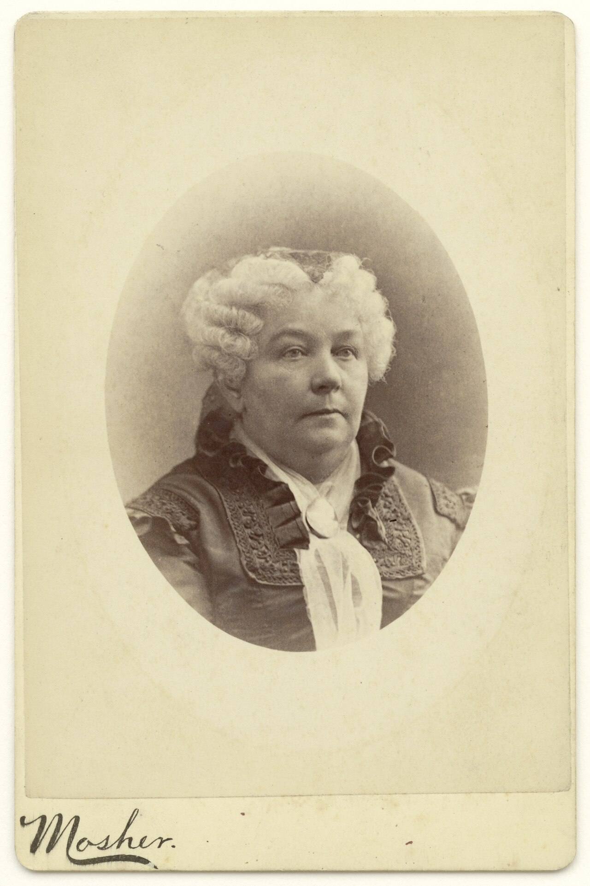
Elizabeth Cady Stanton(medium)TIER BACKFILL
Women’s rights leader (1815–1902) · drafted the Seneca Falls Declaration Public domain · Charles Delevan Mosher · never aired
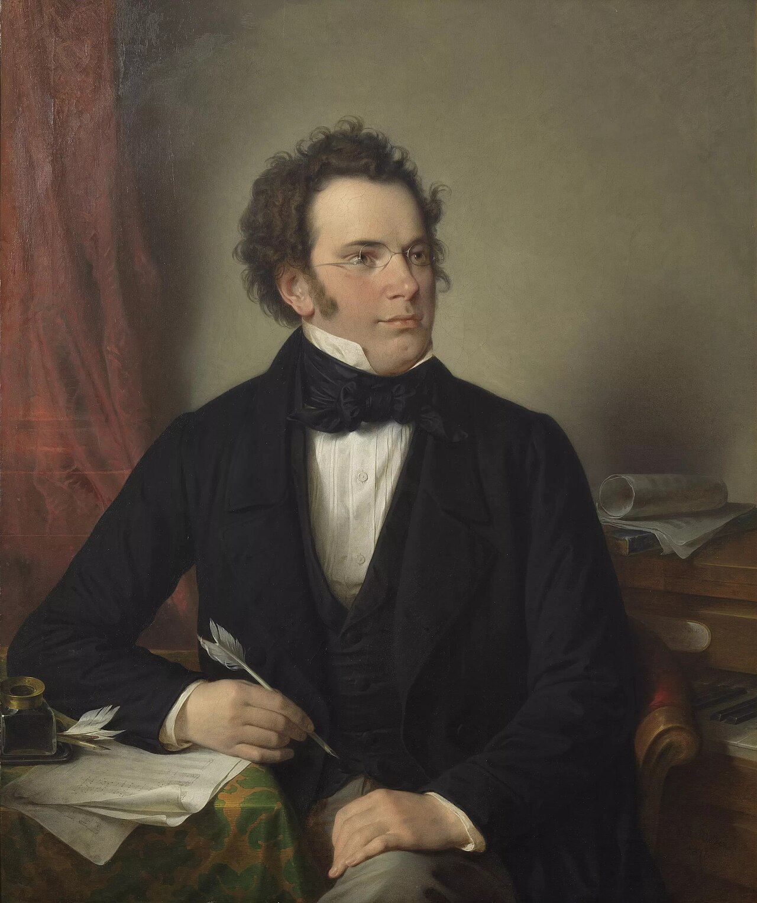
Franz Schubert(medium)TIER BACKFILL
Composer (1797–1828) · wrote more than 600 songs and nine symphonies, dead at 31 Public domain · Wilhelm August Rieder · never aired
Friedrich Schiller(medium)TIER BACKFILL
German poet and dramatist of freedom (1759–1805) · kept a drawer of rotting apples — he couldn't write without the smell Public domain · Anton Graff · never aired
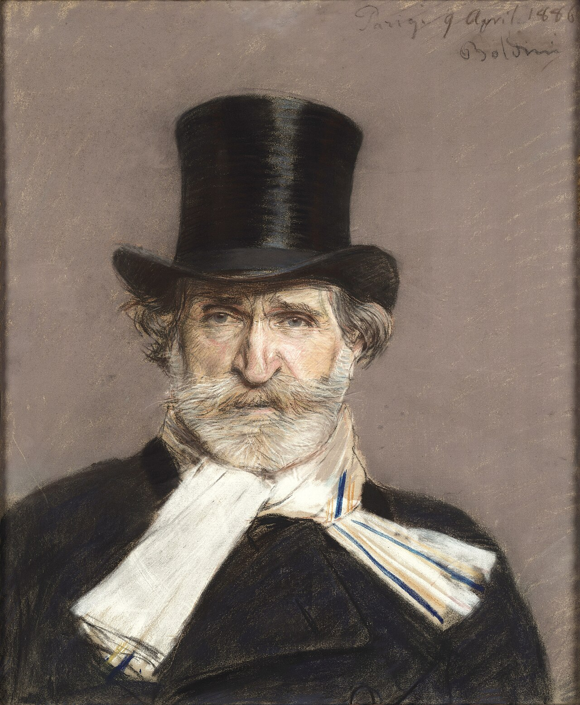
Giuseppe Verdi(medium)TIER BACKFILL
Italy's grandest operatic voice (1813–1901) · came out of retirement at 79 to write Falstaff, only his second comedy Public domain · Giovanni Boldini · never aired
Dian Fossey(medium)
Primatologist who studied mountain gorillas in Rwanda (1932–1985) · murdered in her mountain cabin in 1985; the case is still unsolved Public domain · Redwood City Tribune · never aired
Relic
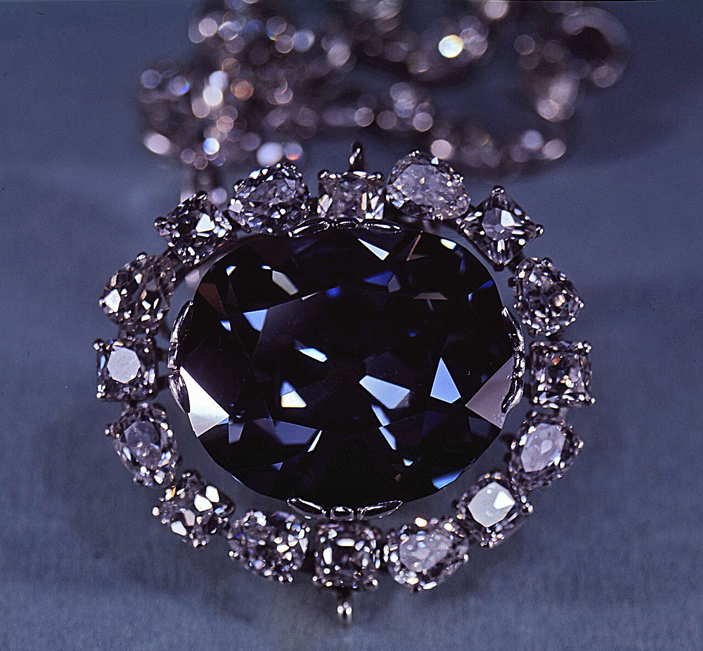
Hope Diamond(medium)TIER BACKFILL
Once part of the French Crown Jewels, stolen during the Revolution — it's trailed a 'curse' legend ever since, with owners said to have met ruin, madness, or the guillotine. Public domain · Unknown authorUnknown author · never aired
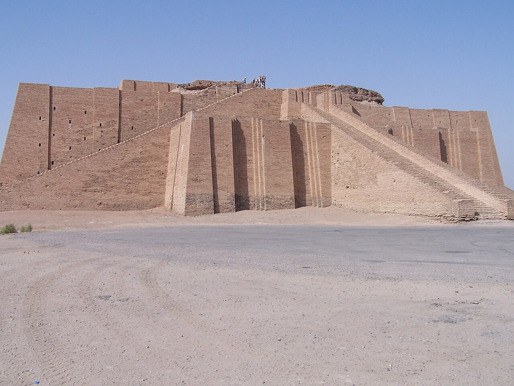
Ziggurat of Ur(medium)TIER BACKFILL
Sumer's stepped brick temple-mountain at Ur, c. 2100 BC — built for the moon god Nanna in the city the Bible names as Abraham's birthplace. CC BY 3.0 · Hardnfast · never aired
Mona Lisa(medium)TIER BACKFILL
Leonardo da Vinci, c. 1503–1519 · Leonardo never delivered her — kept reworking it till he died; Napoleon later hung it in his bedroom Public domain · Leonardo da Vinci · aired 28d ago
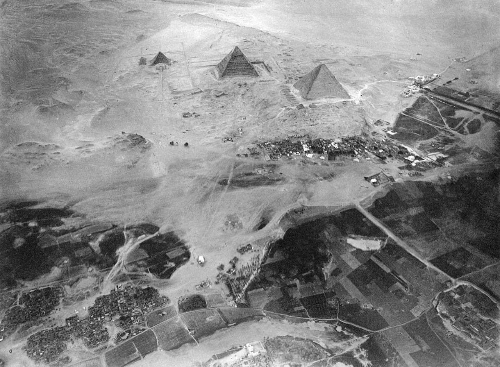
Great Pyramid of Giza(medium)TIER BACKFILL
Tomb of Pharaoh Khufu (c. 2560 BC) · the tallest human-made structure on Earth for almost 3,800 years — until Lincoln Cathedral's spire, c. 1311 Public domain · Eduard Spelterini · aired 28d ago
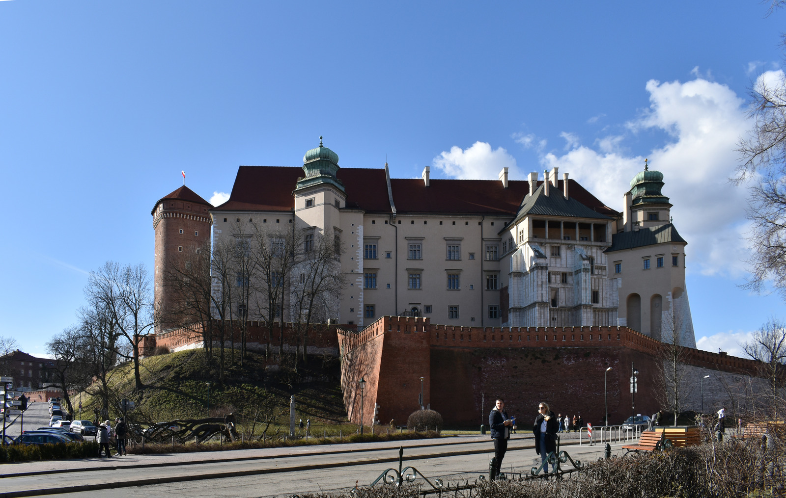
Wawel Castle(medium)
Royal castle on Wawel Hill, mainly 14th-16th century · legend says a dragon lived in the cave below, tricked by a cobbler into eating a sulphur-stuffed sheep CC BY-SA 3.0 · Vvlasenko · never aired
Lifeline
figure
tier
birth → death
km
history
Rudyard Kipling Poet and author
easy
Mumbai, India 1865 → London, United Kingdom 1936
7,192
never aired
Dwight D. Eisenhower WWII Allied commander and 34th U.S. President
easy
Denison, United States 1890 → Washington, D.C., United States 1969
1,839
never aired
Roald Amundsen Polar explorer, first to reach the South Pole
easy
Borge, Norway 1872 → Arctic Ocean 1928
3,421
never aired
George Bernard Shaw Playwright
easy
Dublin, Ireland 1856 → Ayot St Lawrence, United Kingdom 1950
438
never aired
Ferdinand II of Aragon King of Aragon who unified Spain with Isabella
medium
Sos del Rey Católico, Spain 1452 → Madrigalejo, Spain 1516
526
never aired
Thread — “Ink and Revolt” (easy, never aired)
Revolutionary publications: Pravda · L'Ami du peuple · Common Sense · The Liberator
Printing technologies before offset lithography: Movable Type · Woodblock · Lithography · Rotary Press
Milestones of 1848: Communist Manifesto · Seneca Falls · Treaty of Guadalupe · Principles of Political Economy
Documents you can also do — nouns that are also verbs: Petition · Appeal · Address · Protest